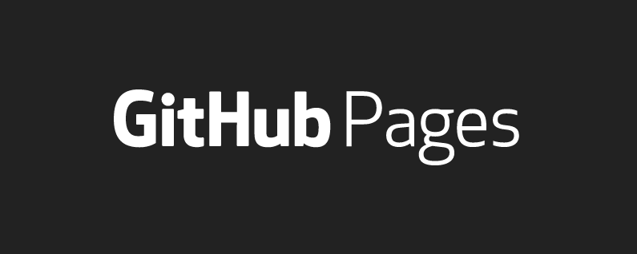
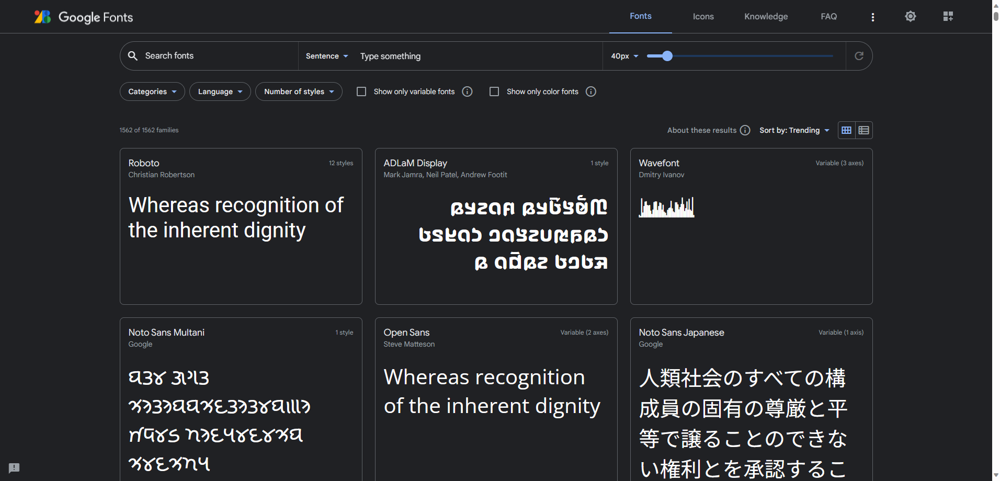
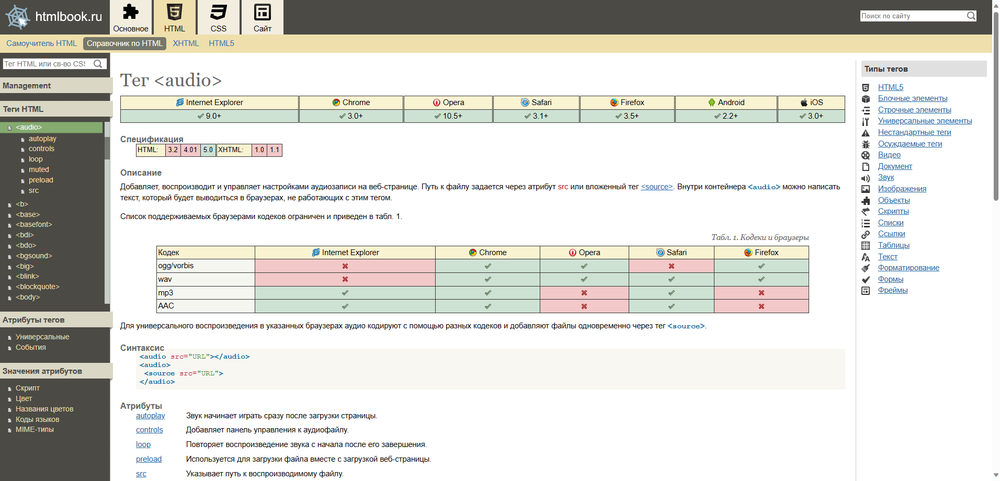
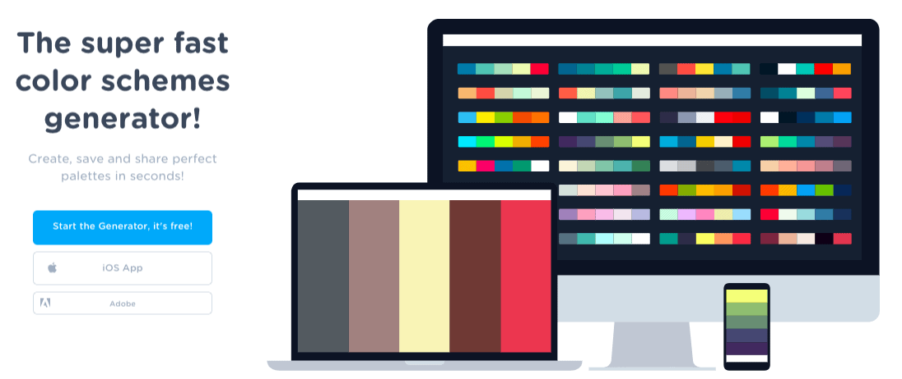
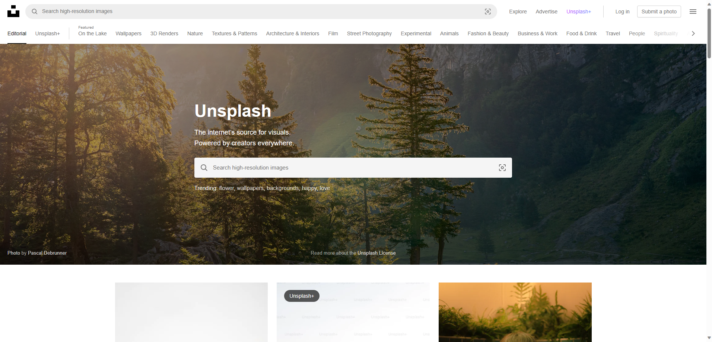
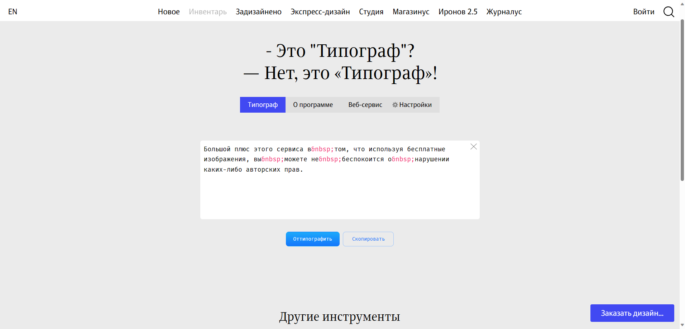
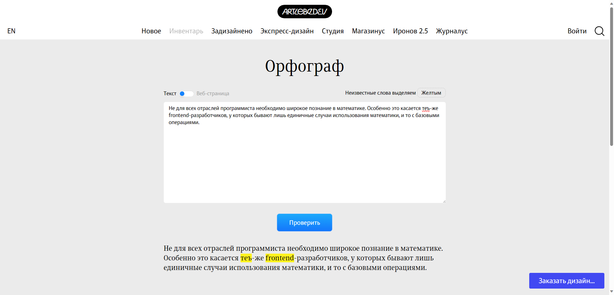
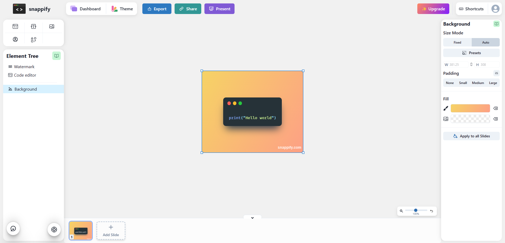

Топ сайтов, которыми я пользуюсь.
Введение
В этом посте я хочу поделится с вами сервисами, или же сайтами, которыми я пользуюсь как веб-дизайнер и фронтенд-разработчик.
1. Github Pages

Безусловно, это один из самых удобных и бесплатных сервисов для хостинга своего сайта. Собственно говоря, этот сайт блог — тоже на нём содержится.
Большинство начинающих веб-разработчиков загружают именно на эту платформу.
Плюсы:
Простой, удобный и интуитивно понятный даже для не опытного пользователя. Бесплатный, работает быстро и без сбоев.
Минусы:
Этот хостинг подойдёт в основном только для статических сайтов, то есть у которых нет базы данных и backend-части. Если у вас крупный проект, по типу интернет-магазина, то этот сервис вам не подойдёт, ведь на него можно отправлять файлы максимум размером 25МБ, что уже для опытный разработчиков может быть проблемой.
Также хочу отдельно отметить, что ваш сайт, размещённый на github pages, будет open-source, то есть кто угодно сможет просматривать его файлы. Чтобы такого не было, придётся «доплатить денюжкой» 💵
2. Google Fonts

Этот сайт — «остров спасения» для тех разработчиков и веб-дизайнеров, которые постоянно обыскивают интернет в поисках сайта с хорошими и подходящими шрифтами.
Любой хороший дизайнер знает, что шрифт во всех проектах должен быть в первую очередь не красивым, экспериментальным и выделяющимся, а понятным.
Поэтому если вы ищете действительно хороший и читаемый шрифт, то Google Fonts обязательно должен быть в «панели избранных» вашего браузера.
Помимо шрифтов, на этом сайте есть раздел с официальными open-source иконками от Google для ваших проектов, которые также хорошо адаптируются под ваши нужды.
3. htmlbook.ru

С виду этот сайт может показаться не очень «опрятным», но на самом деле — это настоящий залежь полезной информации даже для опытного frontend-разработчика.
Здесь хранится если не всё об html и css, то в любом случае очень много той информации, которую вы можете получить не на каждом курсе в интернете за тысячи рублей.
Говорить о нём особо нечего, просто полезный сайт с информацией.
4. coolors

Довольно полезный сайт для дизайнеров, который помогает работать с цветами и палитрой в своём проекте, что всегда важно.
Здесь собраны полезные инструменты от разработчиков, такие как Pallete generator, explore palletes и image picker, с помощью которых можно найти подходящую палитру цветов для себя, а также сгенерировать её из изображения. К тому-же есть contrast checker, который позволяет измерять контрастность между цветами текста и заднего фона, что особенно важно в типографике проекта.
Например, цвета для обложки этого поста также были взяты с этого сайта, поэтому однозначно дизайнерский лайк 👍
4. Unsplash

Как и многие люди, я сталкивался с проблемой в поиске сайта с действительно хорошими материалами для своего творчества. А если вы тоже, то этот сайт для вас.
Тут можно найти много хороших изображений для своего проекта как платных, так и бесплатных, причём предостаточно.
Большой плюс этого сервиса в том, что используя бесплатные изображения, вы можете не беспокоится о нарушении каких-либо авторских прав.
5. Типограф

Типографика — важный элемент любого сайта, от которого зависит всё восприятие пользователем.
Данный инструмент отдельно разрабатывался Российской дизайнерской студией Артемия Лебедева. Он предназначен для того, чтобы с помощью специальных символов в html ваш текст выглядел более опрятным и читаемым для пользователя сайта. Этот текст, который вы сейчас читаете, также «просеивался» через Типограф. Особенно вы это можете увидеть, если вы откроете сайт через инспекцию.
Заодно мы рассмотрим другой полезный инструмент от тех-же разработчиков.
6. Орфограф

Небольшой, но также полезный инструмент, чтобы проверить свой текст на возможно допущенные ошибки в нём. Притом это возможно не только с вручную набранным текстом, но также с текстом на сайте.
Ну и напоследок поделюсь ещё одним интересным сайтом:
7. snappify

Это новый проект, о котором я узнал совсем недавно. Наверняка в разных пабликах вы видели, как в таких «окошках» авторы публикуют либо скриншоты сайтов, либо код.
Помимо того что с помощью этого сайта можно сделать так-же, его инструменты дополнительно позволяют добавлять анимацию этим окнам и использовать их как в презентациях, так и в видео, что даёт больше возможностей в представлении вашего проекта на аудиторию.